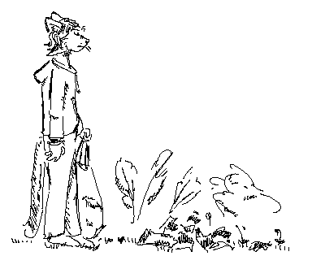

Sisyphean responsibility
The 21st century experience
I had plenty of free time in the summer of 2025, but I was mostly procrastinating on a looming exam. In times when I got exhausted by spending all the time in front of my computers and the blank pages which were meant to be filled with math by then, I would tend to run from studying. Go outside and rewire. This didn't usually work, but instead made me painfully aware of my surroundings.
I am a complainer type of person, and my gaze always lands on the details, whether good or bad - usually the bad. So whenever I stepped outside I was being constantly reminded of the little details that can ruin a day. Bright plastic packaging and alcohol bottles are an eyesore impossible to ignore.
Seeing the same pieces of trash scattered in the same patches of grass everyday convinced me my daily walk would always be ruined unless I made the environment better for myself. In my anarchist streak at the time I took the matter of my wellbeing into my own hands. I put on nitrile gloves and unwrapped a trash bag.
Shame
I had planned no method or system for cleaning the neighborhood. The idea was to carry bags on me at all times and pick up anything I found on the way wherever I was going. I had plenty of time after all.
My first bag started to rip from the weight only 150m from my home. Limited to only two hands to carry the bags I could only clean up the bushes around a single patch of grass. In the space of a two minute walk there was enough trash to overwhelm a person's strength.
Much of the trash clumps in the places where the wind can't carry it further, and the barbarians like to just throw their stuff out of sight. It makes me wonder how many people will get to see this beer bottle or packaging of chips until it fully decomposes. So much litter is already halaf-buried, and I can only retrieve a fraction of that. It takes centuries for this to fully get out of everyone's sight. Our generation will leave a shameful geological record.
But the people actually responsible must have no shame.
Ruminations on the idiots
Contrary to the commiserate tone I might have adopted, the early experience was, surprisingly, very satisfying. It was the right thing to do, which gave me the moral justification to complain and make assumptions about the kind of people that litter. How lazy people must be, how inconsiderate, how uncivilized - as much as I despise this outlook on people in general, this still feels like the correct application of contempt.
It's incredible what kind of stuff people just leave.
Kit's exciting findings within 500m
- Car bumper
- Barbed wire
- Shopping cart
- Half-buried plastic nets and meshes
- Magnetic tape tied in knots around a bush (impossible to untangle)
- A lot of discarded clothing, also underwear
- A lot of condom packagings, but funnily no single condom. Remember safe sex everybody!
- Bottles with all sorts of bodily fluids (yes, even the one you're thinking about)
- Bottle caps of one specific beer having been collected on a singular bush for what had to be months
- A sweater used desperately as an emergency toilet paper (couldn't bring myself to pick it up)
Impact
In the days immediately following a cleanup there is a great sense of accomplishment. It feels refreshing to take a path that you know to be clean and appreciate your work. However, nothing really compares to getting a word of appreciation from a stranger. If contempt for the state of nature at the time was what got me started, it is human support that keeps me going the best.
The best, most reassuring experience so far was when I left a bag next to an already overflowing bin as temporary storage. I reentered the forest intending to clean up a communal fireplace spot which I know twwinkles with leftover bottles and broken glass. By the time I returned some time later, the bag I left was gone.
This was the first time in a while that I felt like I was a part of a larger community. I felt like there was infrastructure and organisation in place to help me specifically to make the world a little better. Few days later I had an opportunity to ask the garbage men at work if they weren't too insulted by my trash laying on the sidewalk, but I was met with such, how to put it, "neutral positivity" that this is simply what they are paid to help with.
I really appreciate the opportunity to do such work. As a principle, I think tangible, meaningful work exactly like this is the core of anarchist praxis. Even if unorganized, not systematic, and not a remedy for the root cause, it still leads by example and forms the basis of a responsible community.
The revolution will not blow up, it will bloom.
Notes on futility
I knowingly put this section at the very end, and it is more of a footnote than the primary experience, despite the cover picture.
The worst part that weighs on me, and the namesake of the piece, is that the cleanliness doesn't last forever. It is very short-lived. Within a week the wind carries the amount of litter comparable to what lied before, and a few new drunkards leave their booze in heaps or in the bushes.
However, and this is the plot twist, most of the small plastic litter is not actually spread by people. I witnessed a bunch of ravens scavenging on a half-empty bag of chips in the bin and ravaging through all that lied in the way - so many of the small trash I find I must now blame on the nature I try to help so much. Great.
This doesn't excuse whoever was the supposed garbage bin expert not to install lids. I won't buy the tale that there is an overlap between the smartest raven and the dumbest human.
Tips for you
1. The main challenge isn't volume, it's weight. (Mainly) glass bottles and soil are heavy and they pile up quickly. You will need to think about the logistics of getting them out of the deep and next to a garbage disposal site. As such your bags don't need to be large, only thick and durable. Also consider taking thick gloves if you have any, the bag handles may hurt your hands.
2. The 80/20 rule is in favor. 80% of the mess is made by the nastiest 20% of litter. If low on power or overwhelmed, focus on the eyesores. Small litter or broken glass are notoriously hard to pick, but they aren't contributors worse than piles of discarded packagings.
Post-mortem
Thoughts that emerged after initial publishing.
In the woods there used to be what had to be a fireplace put down with a fire extinguisher. It was covered in white foam-like mesh. It was there for years, feels like forever. I can't remember the time when it wasn't there. It's gone now. Hundreds must have seen it, it bothered a dozen. One was enough to remove it.
Anyhow, why bother. No matter how much I pick off the street, I am bound to be a net producer
of trash as a whole. My waste will outlive me for someone else to clean up afterwards. Am I even doing my part
by merely swallowing up trash and throwing it somewhere else?
One must imagine Sisyphus happy.
Bags collected so far: , collected but unretrieved.